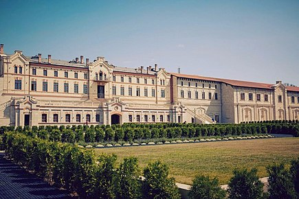
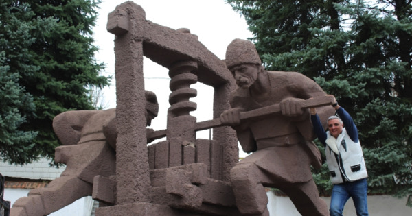
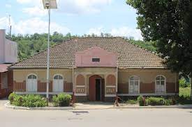
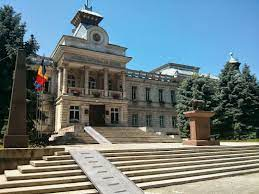
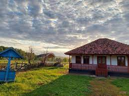
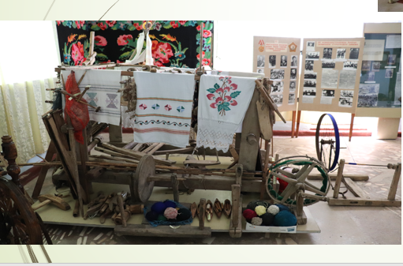
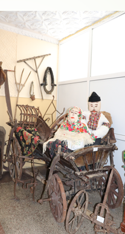
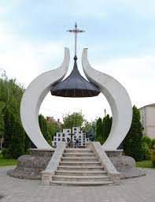
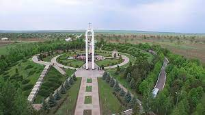

Explorează Raionul Anenii Noi
Castel Mimi
Castel Mimi reprezintă un centru cultural de excelență din Republica Moldova, locul unde vinul, gastronomia și tradițiile basarabene pot fi descoperite sub o nouă formulă.
Vinăria Carlevana
Vinăria Carlevana este situată în satul Merenii Noi. Vinăria Carlevana este un întreg complex de vinificație. Întregul proces, începând cu îngrijirea viței de vie și terminând cu îmbutelierea vinului, precum și pregătirea pentru vânzare, este controlat de experții fabricii
Muzeu satului Hîrbovâț
A fost fondat în baza hotărârei Comitetului Executiv al Sovietului sătesc Hîrbovăț nr.13 din 25 decembrie 1981.Organizator și prim director al muzeului a fost profesorul de geografie de la școala medie din sat, dl Anatolie Friptu.Ideea inițierii unui muzeu i-a fost sugerată de colegul său de breaslă Gheorghe Mihailiuc,profesor de istorie,care i-a povestit despre muzeul din satul Răscăieți,unde lucrase anterior.
Muzeul de Istorie si Etnografie istoric
Muzeul de Istorie si Etnografie este prima destinaţie care trebuie vizitată atunci când ajungeţi în satul Mereni, raionul Anenii Noi. Clădirea în sine reprezintă o bijuterie, fiind inclusă în registrul monumentelor istorice ocrotite de stat. Aceasta a fost construită special pentru Banca Populară “Rejep” în 1910-1911, cu arhitectură foarte interesantă şi unică (a fost ridicat dintr-o compoziție extraordinară de lut, păr de cal si ouă de pasăre), cu podea din teracotă adusă din Germania special pentru construcția acestuia.
Muzeul în aer liber din satul Mereni
Muzeul în aer liber din satul Mereni este un complex muzeal în aer liber în memoria victimelor represiunilor politice. Acest muzeu reprezintă o filă de istorie și prezintă în mărimi reale pe o suprafață de 3,1 ha de teren istoria neamului nostru în perioada represiunilor.
Muzeul sătesc Speia
Muzeul sătesc Speia. Anul fondarii 1981. Aici se ală o expoziţie destul de bogată în fotografii,documente şi obiecte ce relevă unele amănunte din trecutul localităţii.
Muzeul de istorie și etnografie din satul Gura Bîcului
Muzeul de istorie și etnografie din satul Gura Bîcului este cel mai tânăr muzeul din raionul Anenii Noi, fondat în anul 2010. Toate exponatele constituie patrimoniul satului Gura Bîcului.
Capela memorială satul Varnița
În centrul satului se află „Capela Memorială”. Monumentul a fost înălțat în memoria persoanelor care au decedat în conflictul armat de pe Nistru, care a avut loc în 1992.
Complexul memorial „Capul de pod Șerpeni”
Complexul memorial „Capul de pod Șerpeni” a fost ridicat pe malul drept al Nistrului, la aproximativ 40 km est de Chișinău, în amintirea soldaților sovietici căzuți în timpul operațiunii Iași-Chișinău din anul 1944, în cursul căreia trupele sovietice au forțat Nistrul. Lupta de la Șerpeni a fost una din cele mai sângeroase din istoria celui de-al Doilea Război Mondial